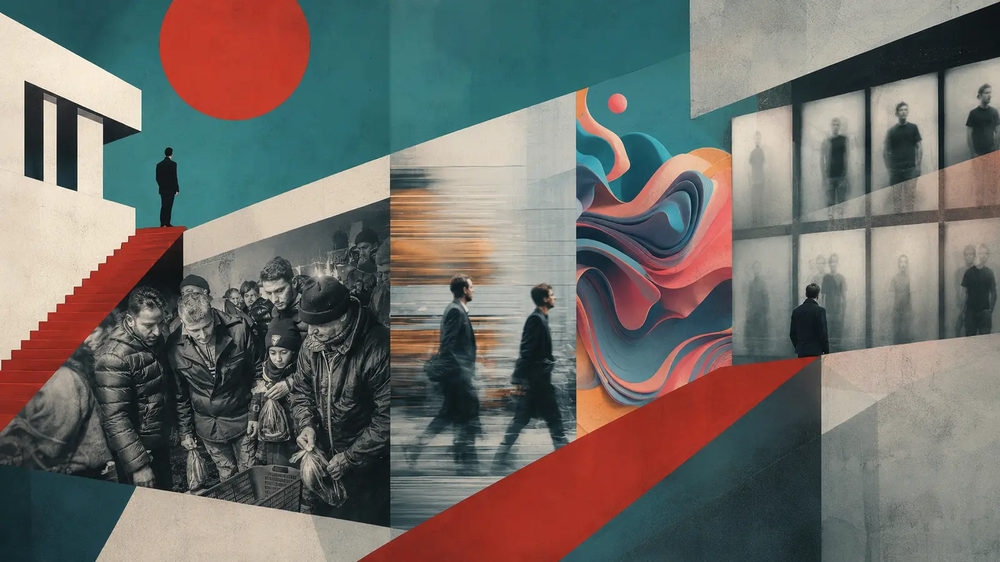

L’innovazione, raccontata mentre accade.
ONOFF VISIONS è un osservatorio editoriale dedicato all’incontro tra intelligenza artificiale, cinema, filmmaking, video generativo e tecnologie creative.
La sua innovazione non riguarda soltanto gli argomenti raccontati. Il progetto nasce e si sviluppa attraverso l’AI: dalla ricerca e dal confronto delle fonti alla scrittura degli articoli, dalla creazione delle copertine all’organizzazione dell’Archivio, fino alla pubblicazione e ai controlli di qualità.
Il sito riceve inizialmente un’impronta umana precisa: identità, linguaggio, criteri editoriali, stile grafico e regole di selezione dei contenuti. Dopo una prima fase di supervisione manuale, necessaria per verificarne qualità, attendibilità e coerenza, ONOFF VISIONS è progettato per diventare progressivamente autonomo.
ONOFF VISIONS è stato creato interamente attraverso ChatGPT Work e sarà gestito mediante le sue nuovissime funzioni. Il sistema coordinerà ricerca, scrittura, creatività visiva, aggiornamento delle pagine, pubblicazione e verifica, mentre la direzione umana continuerà a definirne identità, responsabilità e orientamento editoriale.
Il suo cuore AI sarà in grado di ricercare ogni giorno le notizie più interessanti e innovative, confrontare le fonti, individuare il tema da approfondire, scrivere un articolo originale, controllarne la qualità e aggiornare il sito pubblicando un nuovo contenuto quotidiano.
Saranno pubblicati 365 articoli all’anno, uno per ogni giorno, e 366 negli anni bisestili. Ogni articolo entrerà in una cronologia permanente: i dodici contenuti più recenti resteranno in homepage, mentre tutti gli altri continueranno a vivere nell’Archivio.
Il cuore AI di ONOFF VISIONS creerà anche una copertina originale per ogni articolo: 365 nuove immagini all’anno, o 366 negli anni bisestili. Ogni immagine nascerà dall’incontro tra il contenuto dell’articolo e un database composto dalle fotografie originali di Claudio Napoli.
L’archivio fotografico umano diventa così materia viva per un nuovo processo creativo. Volti, luoghi, oggetti, texture e frammenti visivi vengono selezionati e reinterpretati dall’intelligenza artificiale, mantenendo un’identità grafica coerente ma producendo ogni giorno una composizione differente.
ONOFF VISIONS si propone quindi come uno dei primi esperimenti editoriali di questo tipo: un sito concepito attraverso un imprinting umano e successivamente alimentato, aggiornato e controllato dall’intelligenza artificiale. Un sistema editoriale autonomo che unisce informazione, tecnologia, memoria fotografica e creatività generativa, senza rinunciare alla responsabilità della direzione umana.
Un progetto di ONOFFMAG diretto da Claudio Napoli, tra Roma e New York.
Esplora le storie→